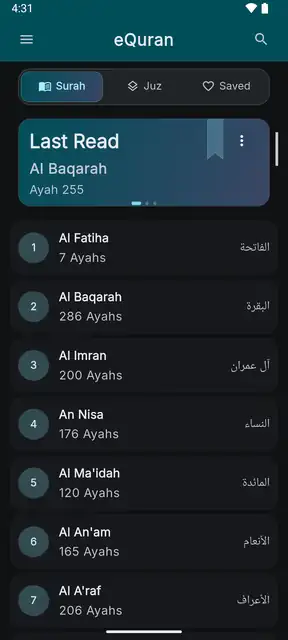
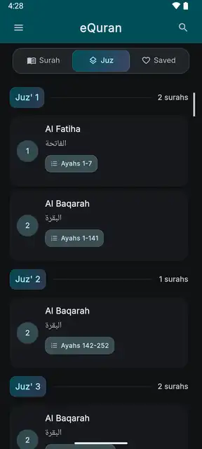

eQuran
إنترنت ومتصفحات
eQuran is a modern Quran companion designed for focused reading, listening, and daily reflection. Built with a clean Material 3 interface, eQuran helps you move between recitation, browsing, and study with speed and clarity. Whether you want to continue where you left off, stream a Surah, play a spe
✓ ترخيص مفتوح (MIT) · آخر تحديث: 2026-10-31
4.0.0-beta.5الإصدار
30.9 MBالحجم
MITالرخصة
Open in Kanzتحميل APK (30.9 MB)
Download APK
SHA-256: 10ab753cceb6869e658834f0c6cb51bf5d809582e369c8956efbb3e680587081


تطبيقات تانية لنفس المطوّر (8)
More apps from this developer: com.app
امسح الكود لفتح صفحة التطبيق
Scan to open this app page
لو كنز مش متثبت عندك: نزّل متجر كنز.
Not installed? Get the Kanz store.